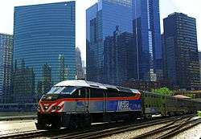
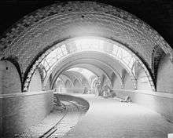

About Us
Learn more about high speed rail and our history.
About high speed rail:
High-speed rail is a type of rail transport that operates significantly faster than traditional rail traffic, using an integrated system of specialized rolling stock and dedicated tracks. Lines run in excess of 160 miles per hour. High-speed trains normally operate on standard gauge tracks of continuously welded rail on grade-separated right-of-way that incorporates a large turning radius in its design.
Rail Safety:
The focus on rail safety by Anytown Metro comes from many fronts beyond operations including emergency preparedness and public awareness. The setup of railway platforms, use of grade crossing signals and horn blasts make up a critical system used to communicate movements of commuter trains to pedestrians and vehicles. Outside of these operational components, Anytown Metro aggressively pursues safety through public awareness. Anytown Metro utilizes its own Operation Lifesaver program and uses it to help spread safety messages. Anytown Metro also holds events promoting rail safety at schools and organizes a safety poster contest awarding winners with prizes and features their poster on monthly passes and at stations.
Anytown Metro has been honored with several E. H. Harriman Awards for employee safety, most recently with a Bronze award in class B (line-haul railroads with between 4 and 15 million employee hours per year) for 2005. Previous Harriman Awards conferred to Anytown Metro include Gold awards for 2003 and 2004 and a Silver award for 2002.
Our History:
Anytown Metro is a commuter railroad in the Anytown metropolitan area. The railroad operates 14 stations on 2 different rail lines. It is the twelfth busiest commuter rail system in the United States by ridership and the third-largest and busiest commuter rail system outside the New York City metropolitan area. There were 37.4 million passenger rides in 2019, up 1.3% from the previous year.
Using Anytown's rail infrastructure, much of which was created in the 19th century, the Anystate General Assembly established the RTA, and later Anytown Metro, to serve commuters by rail. Anytown Metro's creation was a result of the anticipated failure of commuter service operated and owned by various private railroad companies in the 1970s. Anytown Metro owns all rolling stock and is responsible for all stations along with the respective municipalities. Since its inception, Anytown Metro has directed more than $5 billion into the commuter rail system of the Anytown metropolitan area.